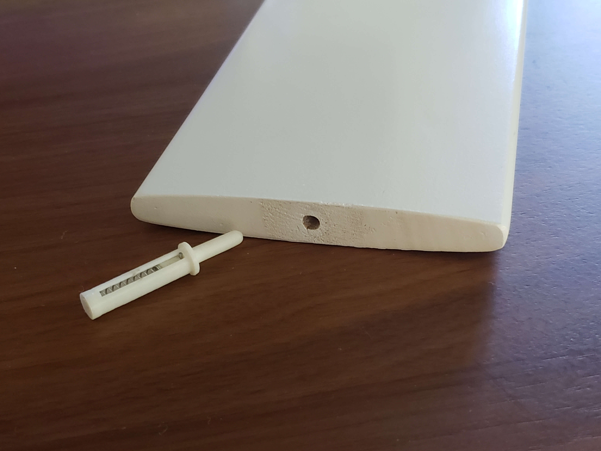
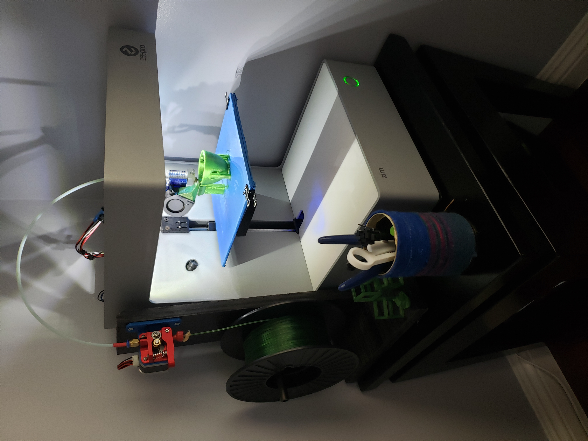
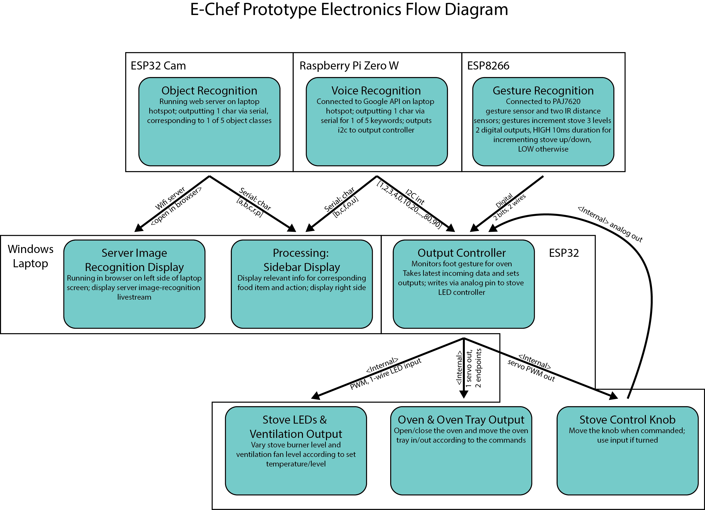
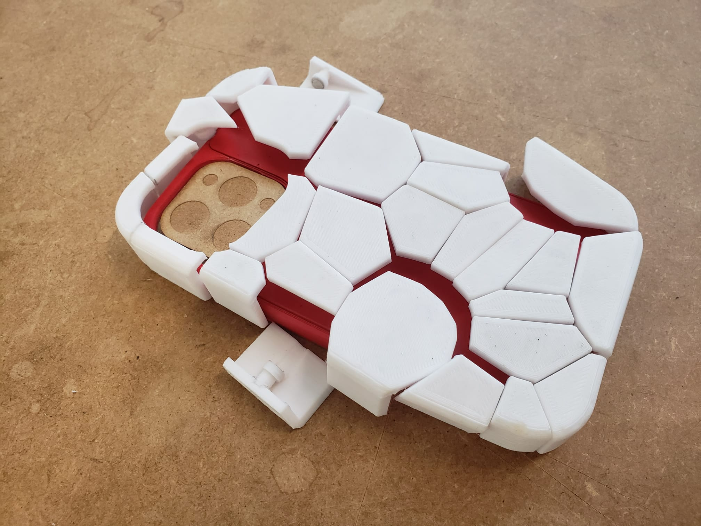
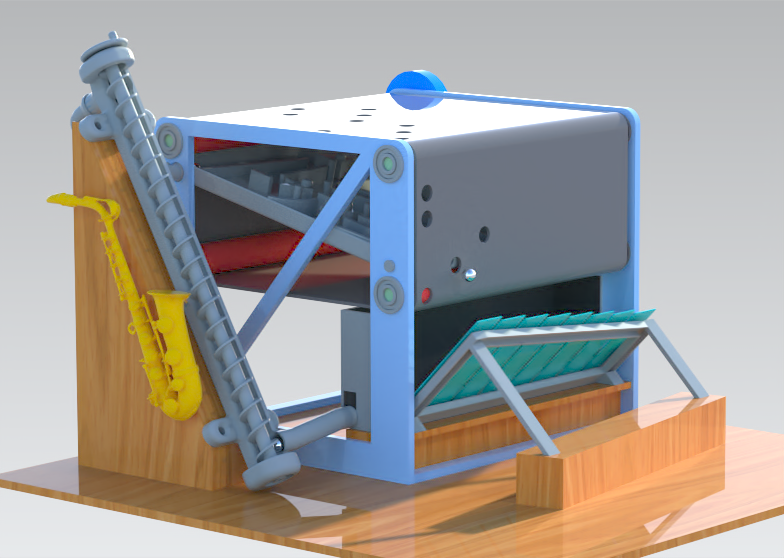

Past
From an early age, I have loved learning how things work. A favorite hobby of mine was taking broken things apart: I disassembled old printers, laptops, even my parents’ old washing machine. The magazine Popular Mechanics was a great influence for me from middle to high school, and inspired me to try making things myself.I really started to get into creating things in my last year of high school. I was fortunate enough to come by a new Zeepro 3D printer then, with a defunct control board and firmware. With little experience, it took me several frustrating months to install and configure new electronics. The “frankensteined” Zeepro printer was the first step in my journey of becoming a designer- the steep learning curve to get it working was a dive into the deep end of prototyping technology, and its functions encouraged me to begin learning CAD modelling on my own time. Prior to starting my studies, I was able to complete several designs of my own.

Spring-loaded Shutter Pin
3D-printed spring-loaded pin used to repair a loose shutter


3D-printed Quadcopter
Quadcopter frame designed and 3D-printed
My forays into the world of technology realization initially drew me towards conventional engineering. It seemed most relevant to my growing interests, and I started studies in Mechanical and Electrical Engineering. I was quite conflicted during this time, confused about my unhappiness in a field I thought I liked. Over time, I realized that what I truly enjoyed was combining different disciplines to make something new. The study of Industrial Design has proven over the past year to be where I belong and what I was looking for, for so many years.
Present
My overarching goal, above all others for the end of Year 1 of ID, was to achieve a certain level of technical skill in various areas. To outline this somewhat broad motive and others more clearly, I defined several SMART (Specific, Measurable, Attainable, Relevant, Timely) goals earlier in the year to set a baseline for the competencies I wanted to achieve, both at the end of Q4 and further on in the future. These all relate back to the five core expertise areas of Industrial Design at TU/e, in order to ensure that my development is well-rounded in nature.Overall, I am happy with my progress this year. I do, however, think that my success criteria could be made more difficult in the future, to motivate me to work more on areas I tend to prioritize less.
Business and Entrepreneurship
Although I have not yet taken any courses that focus mainly on business, this is an expertise area I will make sure to dedicate time to in the future. Throughout some of my courses, I have had the chance to experiment with thinking about how to approach marketability and consumer appeal.
A relevant goal I had for this area was for Project 1 in Q3. One of the group’s agreed-upon constraints was to develop a financially feasible, realistic product with a clear market audience. This would have been an interesting opportunity explore designing for a customer, and dealing with a real-world implementation of Industrial Design. This unfortunately needed to be disregarded in the final concept idea, as the group was unexperienced with the topic and it hindered our creative process.
I was still able to gain important insight into Business and Entrepreneurship by learning about product pitching and designing an attractive demonstration. Particularly, learning to concisely explain a concept was more difficult than I thought it would be; using notes to avoid rambling was an important skill I gained from this. Regarding the demonstration, I also took the time to consider how to optimize a Demo Day exhibit. Unnecessary/silly-seeming aspects such as colorful flashing lights, or mist being sucked downwards from a humidifier were discovered to attract people’s attention. Especially during Demo Day, I learned to use these tools as kind of “visual hook” to transition into giving the pitch to interested attendees.
User and Society
Designing within the context of User and Society has been an important focus of several courses I have taken. User-centered Design taught me many fundamentals of this expertise area, but putting them to use in others has been valuable in seeing how to implement it.
The best example would be the user testing my group and I conducted for guiding our product design for Project 1. We were able to glean valuable insight into what our prototype lacked in terms of features, and what others might expect it to do. This was what drove me to spend a significant amount of time implementing multiple input modalities for each function- to convey the intuitive interaction we were aiming for to users during Demo Day.
My goal for the coming academic year is to work more towards conducting user research. I would like to try working closely with users to develop a concept with parallel development; this style of conceptualization could result in very personalized and individual designs.
Math, Data, and Computing
Since I took the TU/e core courses last year before switching from majors, I had somewhat of a different experience working on the Math, Data, and Computing expertise area than other ID first years. My main area of growth would be in hard skills pertaining to data and computing, and not significantly in Math.
A surprisingly useful resource has been the Processing programming language, which I was first exposed to at TU/e. Over the past year, I have gone from drawing simple shapes to building machine learning algorithms, all in the same IDE and language. Processing has turned out to be an expectedly powerful, versatile tool; the familiarity I have gained with it over the past year will definitely carry over to the future, and at least to the remainder of my time at TU/e.
One of my main goals in terms of technical competency was improve my fluency in the Arduino language before the end of the academic year. This was particularly to be learn how to seamlessly integrate both wired (i2c, serial, SPI) and wired (Bluetooth, radio, Wi-Fi) communications into my projects. My work for Project 1 and Interactive Intelligent agents has met these criteria; a major focus of Q4 has been to work with these protocols to make my projects work better and more reliably.

In terms of future goals, I would like to learn more about how to program low-level code for lightweight microcontrollers. Attiny microcontroller ICs must often be programmed this way due to their low memory and flash size, but they offer a very appealing way to manufacture smaller, cheaper electronics projects. I feel that this will definitely come in useful for me in the future and would be a worthwhile investment of time.
Creativity and Aesthetics
Creativity and Aesthetics is an expertise area that I have warmed up to more and more. Starting Industrial Design, I knew I enjoyed the technical aspects much more than the aesthetic. My growth in this area is different than in others, as I have learned quite a lot from both classes and my peers. Working together with group members has made me realize how small changes can greatly impact first impressions and a product’s appeal. A good example of this was with the somewhat rough construction of my group’s Project 1 prototype. The addition of marble-patterned vinyl had a noticeably positive effect on people’s perception with the prototype, although it was functionally the same. I additionally took two electives that particularly focus on this expertise area. Exploratory Making taught me the importance of intuitive and self-explanatory designs, while Digital Craftsmanship taught me how to make aesthetic choices meaningful and have deeper, hidden meanings. Keeping these principles in mind has helped me make designs that don’t just look nice, but with which I can explain exactly what drove each design decision.
I additionally took two electives that particularly focus on this expertise area. Exploratory Making taught me the importance of intuitive and self-explanatory designs, while Digital Craftsmanship taught me how to make aesthetic choices meaningful and have deeper, hidden meanings. Keeping these principles in mind has helped me make designs that don’t just aesthetically pleasing, but have a clear meaning behind each decision. I still often overlook the importance of Creativity and Aesthetics when presented with problems in other areas, but I strive to become better in this regard. To help me with this, I will start off next year with the Exploratory Sketching course. To better gauge my learning, I would define it as a success if I am able to produce sketches as informative as a still from a CAD model.

Technology and Realization
Technology and Realization is the expertise area in which I am strongest, and that I am personally most drawn to as a designer. My plan was to focus this year on increasing my technical competency- as a result, the majority of my development goals were also in this area.
As stated in my vision, I find it important as a designer to be familiar with field I am working within. By, for example, knowing what kind of electronic sensors exist on the market, I sometimes become inspired by the sensors themselves and think of an idea that uses them. Knowing what is within the realm of possibility is oftentimes important for me to establish the baseline for the “sandbox” environment I am designing within. To add on to this, I enjoy making functional prototypes that are reasonably close to the actual product. Technical hard skills are thus strictly necessary for me to be able do this.
My most developed skills so far are in electronics and physical modelling. I have tried to find opportunities to utilize CAD whenever possible, and can feel it become ever more intuitive and quick. Likewise, working with microcontrollers and electronics often recently has made me more confident of my abilities, and I plan on trying to learn circuit design with KiCAD over the summer to open up more opportunities for me. I want to be able to design a compact Attiny powered control board for a homemade SMD hotplate over the summer months to accompany this new skill.

Earlier this year, I defined two clear SMART goals in this expertise area for the end of the academic year: the first was to learn how to properly use an oscilloscope to prototype better, and the second was to improve my skills with CAD modelling by utilizing force analysis in Siemens NX. I was able to achieve the first during the Creative Electronics course, and helped greatly in debugging my circuits for Project 1. However, I did not end up having the time to work on the second goal, despite working with CAD a lot in Q4. I think achieving this goal is still important, so I will use my free time over the summer to work towards it before the start of Q1.
Besides the goals themselves, I have learned a great deal about various prototyping technologies, like sewing, laser-cutting, embroidering, and further knowledge on 3D printing. Although I do not have a particular project in mind, I would like see if it is possible to learn welding next quarter. Knowing how to construct sturdy assemblies could be a great stepping stone to start making bigger, more complex projects and demonstrations. I have already inquired about this at the Innovation Space, and if such an opportunity exists, I hope to be able to create assemblies that can take my own weight by the end of the first quarter.
Future
Over the next year, I plan on focusing first and foremost on Business and Entrepreneurship. It is both my weakest expertise area and one of the most important to develop as an Industrial Designer. I feel like I often have interesting ideas, but I want to be able to make something more out of them. To this effect, I plan on pursuing the Technology Entrepreneurship USE track and obtaining the certification; this seems like it would help my competitiveness in the job market and teach me how to potentially start my own business.
I am also looking forward to Project 2 and coming up with new ideas in the New Futures squad. There are many possible areas of development within the household environment, but the topic I find particularly interesting is personal food exploration/production. I wish to learn more about the technologies and viability of this in the modern world.
The electives I take next year will mostly be dictated by what skills I need to learn for other courses, or where I feel I am lacking. I plan to take Exploratory Sketching in Q1 to make sure I cover this fundamental of design that I did not manage to fit in this year. I plan on seeing particularly where Project 2 takes me before deciding on the other electives, especially since I was able to take several this year already.
I would also like to search for Industrial Design-relevant internship/job opportunities starting next academic year, since, due to personal circumstance, I will be unable to do so this summer. I have started looking at and inquiring about what possibilities exist, and I plan on refining my portfolio in the meantime. My long-term plan is to eventually have a job to transition to immediately after finishing my studies at TU/e.